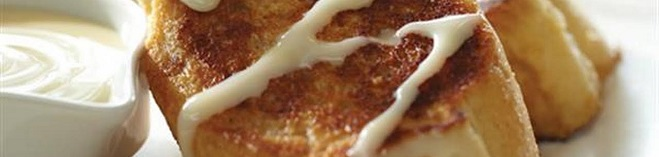
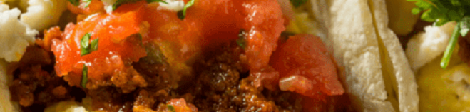
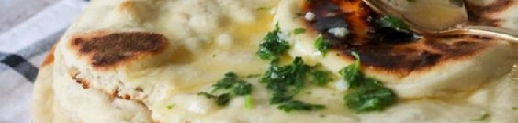
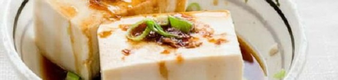

Le colazioni migliori nel mondo
Un giro in Europa
Spagna:
Semplice quanto volete, ma il pane alla Catalana, o pane col pomodoro, è una delizia. Basta strofinare aglio fresco e pomodoro maturo sul pane, aggiungere olio extra vergine e sale e il gioco è fatto. Formaggio, prosciutto o salsiccia facoltativi.
Danimarca:
Sul tavolo della colazione danese si trovano spesso pane di segale, formaggi, salumi, paté, miele, marmellata e, a volte, dello squisito pane di segale al cioccolato.
Italia:
La più classica delle colazioni consiste in una bevanda calda - caffè, tè, oppure cappuccino - accompagnata da una brioche oppure dei biscotti. Esistono in realtà molte varianti: c'è chi preferisce una tazza di latte tiepido, dove magari tuffare dei cereali, oppure chi mangia un tramezzino al posto del cornetto.
Svegliarsi in America
Cuba:
Di solito si fa colazione con caffè zuccherato, latte e un pizzico di sale. Il pane cubano è tostato, imburrato.
Stati Uniti:
Pancake fatto solitamente in casa, sciroppo, mirtilli.

Messico:
Punte di vitello, chilaquiles, formaggio e coriandolo, insieme ad altre specialità locali.
Una sosta in Asia
Iran:
Pane Naan (quello simile a una spugna) con burro e marmellata. E se la colazione non basta, sotto con l'Halim. L'halim è una miscela di frumento, cannella, burro e zucchero cucinato in grandi pentole insieme alla carne sminuzzata.
Filippine:
Mango, riso e delle miniscole salsicce chiamate longganisa. Che una volta fritte con sale e spicchi d'aglio prendono il nome di sinangag. Le sinangag unite alle uova, la carne e i fagioli rappresentano una perfetta colazione filippina.
Giappone:
Tofu a colazione. Del resto, è molto popolare in Giappone, al pari del riso, ovviamente, e del pesce. Bagnato con l'inevitabile salsa di soia.
